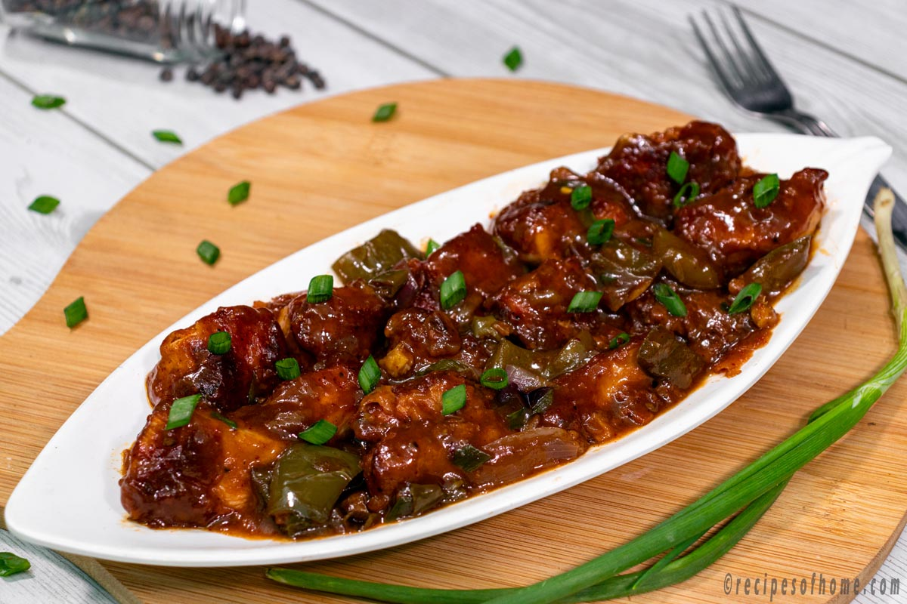

Back to home
Chilli Chicken

Chilli Chicken is a beloved Indo-Chinese fusion dish featuring crispy fried chicken doused in a spicy, tangy sauce. Often served dry or with gravy, it combines the bold flavors of Indian spices with Chinese-inspired soy and chili sauces, making it a restaurant favorite and street food staple across South Asia.
Ingredients:
For Marinade
- 550 g boneless chicken thighs, cut into 1-inch pieces
- 4 tbsp cornstarch
- 1.5 tbsp all-purpose flour
- 1 egg
- 1 tsp dark soy sauce
- 1.5 tsp garlic paste
- 3/4 tsp red chili powder
- 1/2 tsp salt
- 1/4 tsp black pepper
For sauce
- 1 tbsp dark soy sauce
- 2 tbsp red chili sauce
- 1 tbsp green chili sauce
- 1 tbsp ketchup
- 3/4 tbsp vinegar
- 1/2 tsp brown sugar
- 1/4 tsp sesame oil
- 3 tbsp chicken stock or water
- Salt and black pepper, to taste
For stir-fry
- 2 tbsp oil
- 6 garlic cloves, finely chopped
- 1 tbsp ginger, finely chopped
- 2 scallions, chopped (white and green parts separate)
- 5-6 green chilies, split lengthwise
- 1/2 green bell pepper, diced
- 1/2 onion, cubed
Instructions:
- Mix all marinade ingredients; coat chicken pieces and marinate 30-45 minutes.
- Heat oil; fry chicken pieces in batches until golden and crisp. Drain.
- In another pan, heat oil. Sauté garlic, ginger, and the white part of scallions until aromatic.
- Add green chilies, bell pepper, and onion; stir-fry for 2-3 minutes.
- Mix sauce ingredients in a bowl. Pour into the pan and simmer until thickened.
- Toss in fried chicken, green scallion parts, and toss to coat evenly.
- Serve hot garnished with additional scallions